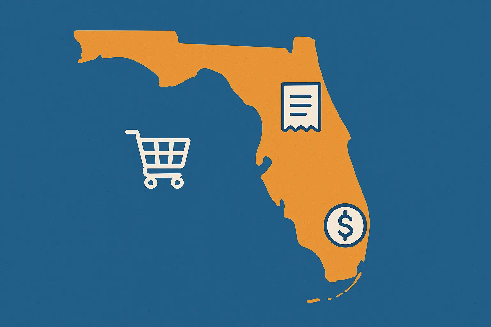

2025-10-28
Florida Sales Tax for Businesses Explained

Florida Sales Tax: A Guide to Compliance for Businesses
Every business in Florida that sells products or services must understand the state’s sales tax laws. As a business owner, you are responsible for collecting sales tax at the time of purchase and remitting payment in a timely manner. The laws can be complex, and failure to stay compliant can put your business at risk. To get help now, contact us at Nashville Tax today or keep reading for an overview of the essentials.Key takeaways:
- Most businesses in Florida are required to collect sales tax if they sell tangible goods or services.
- Some exemptions to Florida sales tax obligations exist, especially for non-tangible sales.
- As a business owner, you must collect sales tax from your customers and make payments to the Department of Revenue on time. Failing to do so can result in penalties.
- Work with Nashville Tax Solutions to help you navigate delays and late payments.
Who Needs to Pay Florida Sales Tax as a Business?
Under Florida sales tax laws, all businesses that sell or rent taxable goods or services to consumers must register their business with the FL Department of Revenue and collect sales tax. This includes retailers, short-term rentals, recreation companies, and many service providers.Sales Tax Collection for Businesses Outside of Florida
If your business has taxable sales in Florida but does not have a physical presence in the state, you may still have to collect sales taxes if you have economic nexus. For example, this applies if you own an e-commerce store and make sales to Florida residents. In Florida, the economic nexus threshold is more than $100,000 in sales to consumers in the state. If you meet this threshold, you must register with the Florida Department of Revenue and then collect sales tax. However, if you're a marketplace seller, you may not need to collect sales tax – instead, you can let your facilitator handle it. Marketplace facilitators, or companies that allow sellers to sell on their platform, such as eBay, Etsy, and similar organizations, must collect and remit sales tax on behalf of the marketplace seller for all taxable sales delivered to Florida. For example, if a customer purchases a product from your listing in New York on eBay, and you are shipping it to Florida, eBay is responsible for applying, charging, and collecting sales tax on your behalf and then paying that to the state.Do you apply sales tax to shipping charges?
Also note that if you are charging shipping and handling on these types of purchases, you do not apply sales tax to the shipping and handling costs, as long as they are separately stated and not included in the purchase price. That means they should have a separate line on the bill charged to the customer.How to Register to Collect Sales Tax as a Business in Florida
You can register online using the Florida Business Tax Application. This interactive wizard determines all of your tax registration requirements. It is a faster and direct method for registering. If you would rather follow the more traditional methods, you can fill out a paper version of the Florida Business Tax Application (Form DR-1). Once you submit the information to the revenue office, they will review it and issue a welcome package that contains your Certificate of Registration, Annual Resale Certificate, and a brochure that aims to make it “easy” to set up and manage the process.What Is Subject to Sales Tax in Florida?
Florida sales tax applies to things like clothing, electronics, furniture, computer systems, prepared food, and household items. Examples of taxable goods include:- Most tangible products
- Services, explained below
- Rentals of accommodations, including vacation rentals, hotels, and similar
- Admission charges to events, amusement parks, sports events, or recreational activities
- Leases of tangible personal property
What Are Non-Taxable Goods in Florida?
In Florida, prescription and most over-the-counter medications are not taxed. Groceries, such as milk or meat, are not taxed. However, food that’s prepared for you is taxed.Sales Tax on Services in Florida
Most business services are exempt from taxation under the state’s laws, but some are taxable. Those that are taxable include:- Communication services such as your mobile phone, direct-to-home satellite, and video services
- Real property repair labor, including repairs to alter or fix residential or commercial property
- Security services, including detective and robbery protection
- Commercial cleaning and pest control services for non-residential spaces
- Amusement machines, including operating vending or amusement machines (these are taxed at 4%)
- Amusement and recreation services, including admission to events
- Service warranties, including any sale of service warranty contracts
How to Collect Florida Sales Tax from Customers
Your business charges your customers sales tax at the time of the purchase and collects that tax from the customer. You typically must provide (or at least offer) a receipt showing the amount of the purchase and the tax collected. Apply the local sales tax rate to the sale. For example, if the sales tax rate is 7% and a customer buys a taxable item for $100, you must collect $7 in sales tax, bringing the total bill to $107. Luckily, you don't have to do this manually – most POS software will automatically calculate sales tax for you.How to File and Pay Florida Sales Tax as a Business
Once you register with the Department of Revenue, they'll assign your business a filing frequency. This could be monthly, quarterly, or annually, depending on your expected sales volume. Note that you need to file a return for each period, even if you do not have any taxes due to be paid at that time – just note $0 in sales if applicable. Returns and payments are due on the 20th of the month following the sales period – for example, if you file monthly, July returns and payments are due August 20th. If you file annually, the whole year is due on January 20th (following the year of sales). The Department takes a day to process electronic payments, so you typically must pay at least a day early or you'll incur late fees.How do you pay sales taxes owed?
Most businesses must submit an electronic payment. This applies in situations where your sales and use tax payments are $5,000 or more in the state’s prior fiscal year. The Florida fiscal year runs from July 1 to June 30th. In some cases, you may be eligible for a collection allowance of 2.5% for the first $1,200 of tax due, up to $30.How do you pay local taxes?
Each county sets up its own sales tax rate, but the Florida Department of Revenue minimizes the strain by collecting the local taxes for you. You will report them on your Form DR-15 and pay them at the same time as you pay state sales tax.Penalties for Non-Compliance with Florida Sales Tax for Businesses
You could be found non-compliant with Florida’s sales tax laws if your business is involved in any of the following:- Failing to register: You may have to pay late fees, and restrictions on your business license may be applicable.
- Late filing or payments: The late penalty is 10% of the unpaid tax for every 30 days it is late, up to as much as 50%. A minimum penalty of $50 is charged for any late return.
- Fraud or willful evasion: If found to be guilty of tax evasion or fraudulent actions, you could face a 100% penalty on the underreported taxes. Civil and criminal charges may be applied.
- Underpayment: If you did not pay all that was owed, you face a 10% underpayment penalty on all underpaid values.
- Failing to file consecutive returns: If you knowingly fail to file six consecutive returns, you face third-degree felony charges.
How to Resolve Sales Tax Issues in Florida
Having sales tax problems? Potential resolution options may include:- Voluntary disclosure agreements: You come forward voluntarily (before the Department contacts you) and you get to minimize penalties and legal consequences while getting back into compliance.
- Payment plans: It is possible to set up payment plans to help your company get caught up over time. If you cannot make payment in full of your sales tax liability, a payment plan can help you.
- Contest inaccurate information: If you believe that an inaccurate assessment was sent to your business, you can request an appeal and review.
How Nashville Tax Solutions Assists in Florida Sales Tax Matters
Nashville Tax Solutions works closely with businesses to offer solutions. We are your resource for navigating Florida sales tax business obligations, including registration, collection, remittance, and dispute resolution. We can help you with:- Determining registration requirements for your business
- Assessing if your sales are taxable or not.
- Assisting with filing and payment obligations.
- Representing you during a Florida sales tax audit.
- Resolving past-due sales tax liabilities and penalties.
Ensuring Florida Sales Tax Compliance for Your Business
As a business, it is your responsibility to register, collect, and pay sales tax under Florida law. Be proactive about setting up and managing this process to ensure you are compliant. When you need help, turn to the team at Nashville Tax Solutions for guidance.Ensuring Florida Sales Tax Compliance for Your Business
As a business, it is your responsibility to register, collect, and pay sales tax under Florida law. Be proactive about setting up and managing this process to ensure you are compliant. When you need help, turn to the team at Nashville Tax Solutions for guidance.FAQs – Get Answers to Your Sales Tax Questions
What is the sales tax rate in Florida?
The general tax rate in Florida is 6%. But local governments may also add on sales tax, potentially bringing the rate up to 8%. For example, a business in Jacksonville must collect 7.5% – 6% charged by the state and 1.5% charged by Duval County. There are a few exceptions to the state's standard rate:- New mobile homes are taxed at 3%
- Amusement machine receipts are taxed at 4%
- Electricity is taxed at 6.95%
Do I need to collect Florida sales tax if my business is located outside of the state of Florida?
That depends on the sales volume and what you are selling. If you collect revenue of over $100,000 from customers in this state, you may be responsible for collecting sales tax.How often do I need to file Florida sales tax returns?
The Florida Department of Revenue will assign you a filing timeline based on sales volume. This could be monthly, quarterly, or annually.Does Florida have sales tax holidays?
Yes, Florida offers "sales tax holidays" where customers don't have to pay sales tax on certain products. Notably that includes a Back to School sales tax holiday and a Second Amendment sales tax holiday on fishing and hunting gear.What are some common mistakes businesses make with Florida sales tax?
Some of the most common mistakes include:- Failing to collect sales tax.
- Not applying proper tax exemptions.
- Not understanding how the economic nexus rules work.
- Calculating the wrong sales tax rate, especially after changes.
- Not seeking guidance sooner if they are falling behind.